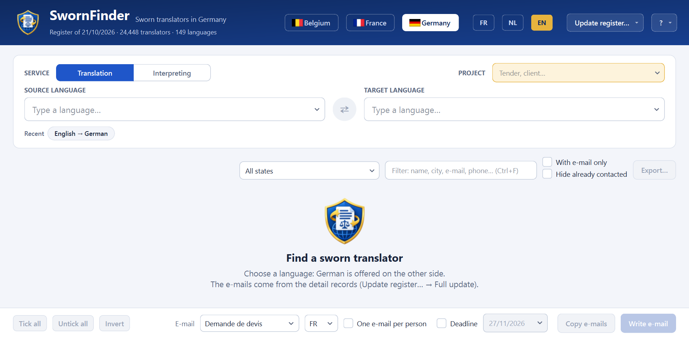

SwornFinder
Find sworn translators and interpreters in Belgium, France, Germany and Poland.

Version history
Run the installer once; the app then updates itself to each new version.
-
v2.6.018 November 2026
- New country: Poland (list of sworn translators of the Ministry of Justice, lista tłumaczy przysięgłych). It covers about 10,000 people and 57 languages, each combined with Polish both ways, for translation and interpreting, with the e-mail addresses (≈ 49%) and phones published by the list, a voivodeship filter and the TP number.
- For each person, the date each language was granted, the TP number and the academic title appear in the tooltip and the export.
- Better civility guess for Polish first names.